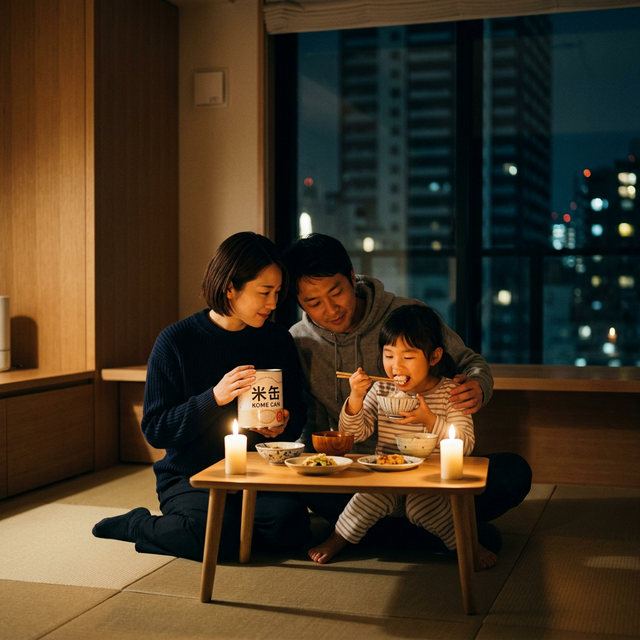
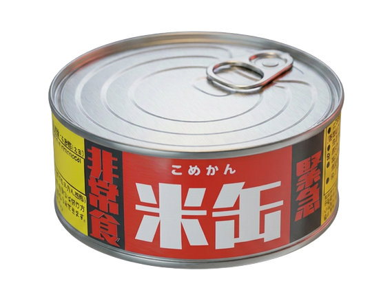

非日常に、
いつもの「美味しい」を。
水・火・電気、一切不要。0秒で開く、食の保険「米缶」。
3月11日（水）より、予約販売開始。

Our Mission
「もったいない」と
「もったいない」と
「足りない」をつなぐ。
「お腹が空いた」と言えない子供たちがいます。
後継者がおらず、田んぼを手放さざるを得ない農家さんがいます。
稲作ができる豊かな土地があるのに、それが活かされていない現状。
十郷は、このふたつをつなぐハブになります。
私たちは食を通じて、日本の未来を支える循環を作ります。
Our Business
食の循環をつくる、
食の循環をつくる、
4つの事業。
「作る」「備える」「届ける」「つなぐ」。
これらが連携し、地域に笑顔が回り続けるエコシステムを生み出します。
01
作る
農業・空き家再生
02
備える
防災備蓄食
03
届ける
フードトラック
04
つなぐ
地域イベント
笑顔の
循環